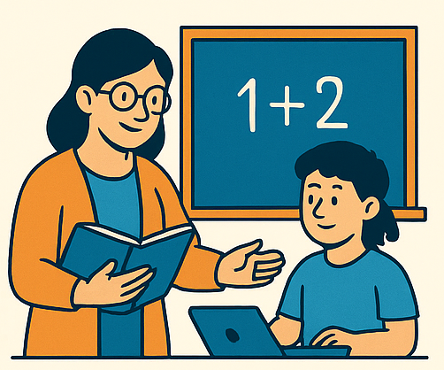

Apoio à Educação
O projeto Apoio à Educação tem como objetivo fortalecer o aprendizado de crianças, jovens e adultos através da tecnologia. Oferecemos suporte escolar digital, materiais educativos, tutorias online e oficinas complementares que ajudam estudantes a desenvolver habilidades essenciais para o futuro. As ações incluem reforço escolar com apoio de ferramentas tecnológicas, orientações de estudos, criação de ambientes digitais de aprendizado e incentivo ao uso de plataformas gratuitas de educação. Dessa forma, promovemos mais autonomia, motivação e oportunidades para todos os participantes.